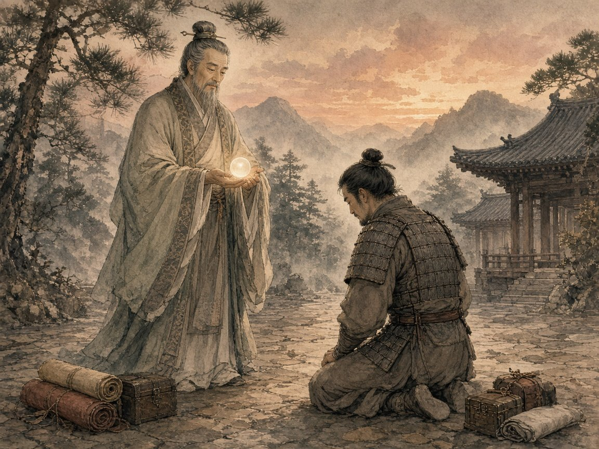

第11回髻中明珠（けいちゅうみょうじゅ）の譬え
配信日
🔊 読み上げで聴く
出典『妙法蓮華経』安楽行品第十四（髻中明珠の譬え）

今日は、法華経の安楽行品第十四に説かれる「髻中明珠（けいちゅうみょうじゅ）の譬え」をご紹介します。法華七喩の最後のひとつです。昔、力の強い転輪聖王（てんりんじょうおう）が、従わない国々をしずめるために兵を出しました。王は手柄を立てた兵たちを大いに喜び、田畑や家、町、衣服、金銀や宝石、象や馬車まで、働きに応じてほうびを与えました。けれども、自分の髻（もとどり）の中に結いこんだ一粒の明るい珠だけは、だれにも与えませんでした。王の頭の上にただひとつしかない宝なので、軽々しく与えれば、まわりの人々がたいへん驚き、あやしむからです。そして、ひときわ大きな手柄を立てた者が現れたとき、王はついにその珠を授けたのです。お釈迦さまは、これを法華経そのものにたとえて、こう説かれました。
「此の法華経は、是れ諸の如来の第一の説なり。諸説の中に於いて最も為れ甚深なり。末後に賜与すること、彼の強力の王の久しく明珠を護りて、今乃ち之を与うるが如し」 出典 『妙法蓮華経』安楽行品第十四（此法華経 是諸如来第一之説 於諸説中最為甚深 末後賜与 如彼強力之王 久護明珠 今乃与之）
仏さまは長いあいだ、人々の心に合わせてさまざまな教えを説き、最後に、いちばん大切に守ってこられた法華経を授けてくださいました。第4回の「衣裏繋珠の譬え」では、衣の裏にすでにある宝に気づくことをお話ししましたが、こちらは、王が最後まで守り通した宝を授かるお話です。その宝のかなめを、私たちはお題目として毎日いただいています。ありがたい宝ほど、当たり前になって粗末にしがちなものです。一遍のお題目を、王から珠を授かる兵のような思いで、大切にお唱えしたいものです。